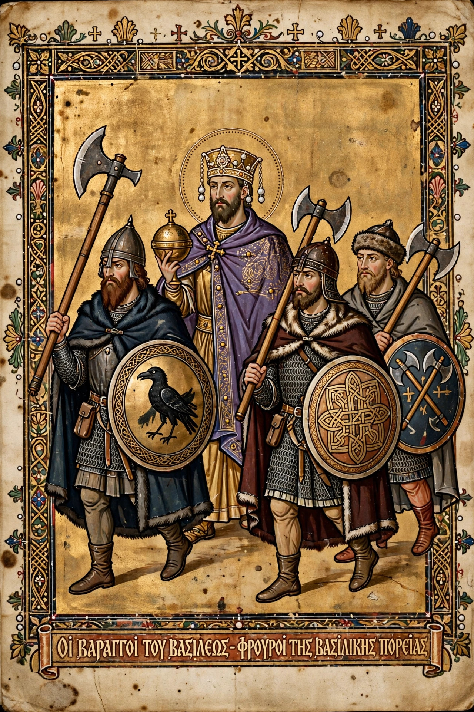

Varangian Guard
| Varangian Guard | |
|---|---|
| Active | 988 – c. 1400 (last mentions 14th century) |
| Country | Byzantine Empire |
| Role | Imperial bodyguard and elite shock infantry |
| Equipment | Long axes (the "axe-bearing guard"), swords, round shields |
| Notable members | Harald Hardrada (later king of Norway) |

The Varangian Guard (Greek: Τάγμα τῶν Βαράγγων) was an elite unit of the Byzantine Army and the personal bodyguard of the Byzantine emperors from the 10th to the 14th centuries. Recruited first from the Varangians — Norse and Rus' adventurers who travelled the rivers of Eastern Europe — and later also from Anglo-Saxons who left England after the Norman Conquest, the guards were famous for their loyalty to the emperor's person, their ferocity in battle, and their great two-handed axes, which led Byzantine writers to call them the "axe-bearing barbarians".
Origins
The Guard was formally established in 988, when Emperor Basil II, facing civil war, obtained 6,000 Varangian warriors from Prince Vladimir of Kiev under their treaty — soldiers he could trust precisely because they had no ties to Byzantine factions. Basil used them to crush the revolts of Bardas Phokas and Bardas Skleros and kept them as his household troops. Their pay was high, and by tradition the Varangians enjoyed the privilege of pólatta looting — rushing the imperial palace to seize treasure on the death of an emperor.
Service and composition
Varangians served as the emperor's escort in the palace and on campaign, as shock troops in battle, and in roles requiring incorruptibility, such as guarding the treasury and prisons. They fought in Sicily and southern Italy under George Maniakes (with whom the young Harald Hardrada, later king of Norway, served in the 1030s), in the Balkans, and against the empire's enemies in Asia Minor. After 1066, and especially after the Battle of Hastings, English exiles joined in such numbers that the Guard became substantially Anglo-Saxon, and Byzantine sources speak of "Varangians from Thule". The Guard was shattered by the Fourth Crusade's sack of Constantinople in 1204 but was reconstituted under the Palaiologan emperors and is last mentioned in palace ceremonies of the mid-14th century, by then largely Greek in composition.
Legacy
The sagas preserve the memory of service in "Miklagard" (Constantinople) as the road to wealth and honour for Norse warriors — Harald Hardrada, Bolli Bollason and many others returned rich from the Guard. Runic inscriptions in Scandinavia commemorate men who "were in Greece", and Varangian graffiti, including runes carved in Hagia Sophia, survive in Istanbul.
See also
Basil II · Harald Hardrada · Varangians · Byzantine Empire · Norman Conquest